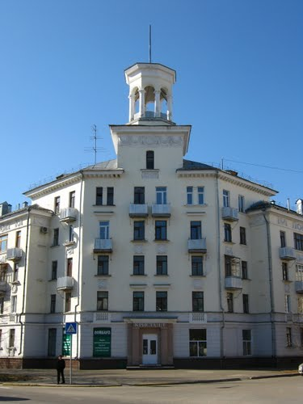
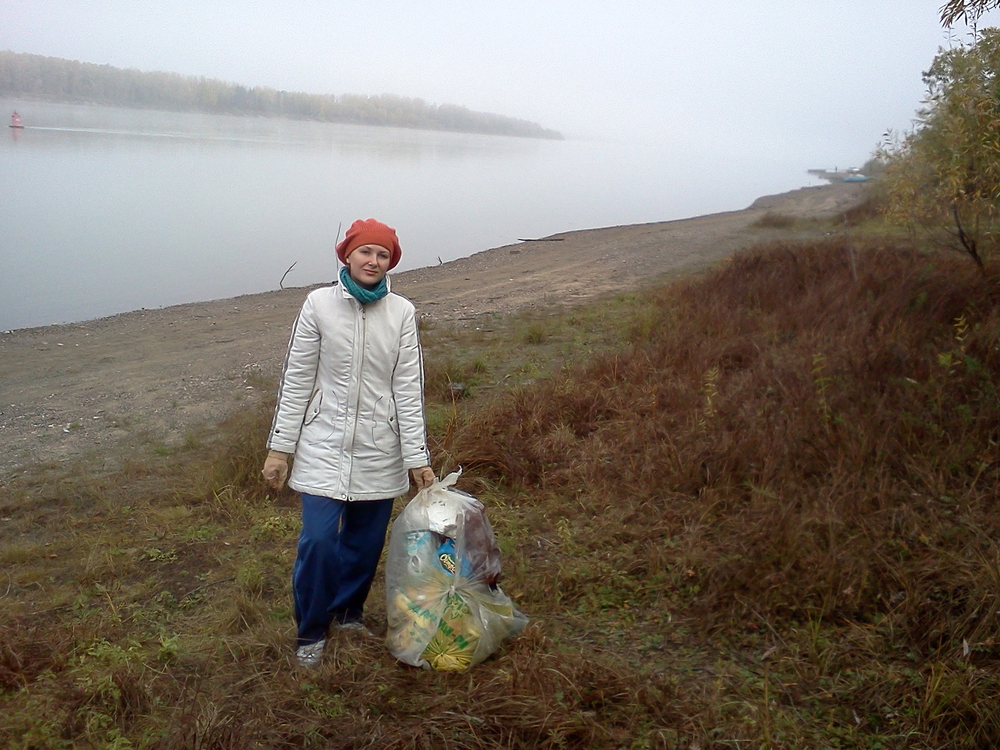
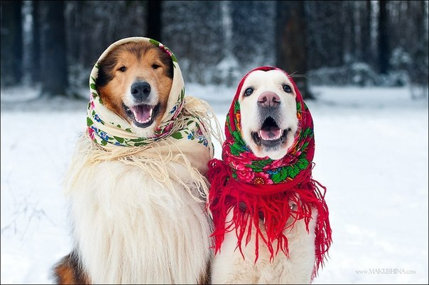
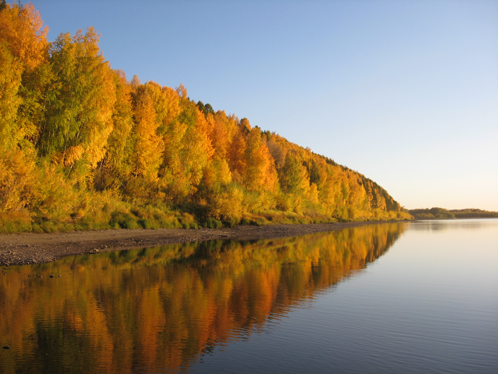
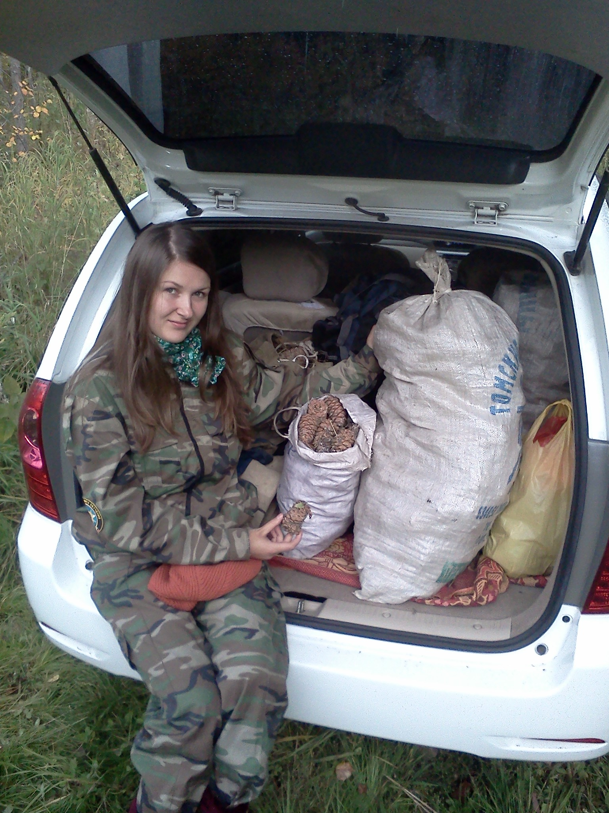

Main MenuAbout Me Education Hobbies Web Component Main |
SportI've been going in for sport since childhood. I started with speedskating, went on with skiing, alpine skiing, cycling and now - shooting. Housing and utilitiesI never thought I'd be into it! Now as a member of the house council I carry the responsibilities of the one who keeps eye on how my house is maintained, renvated, mopped, etc. It all started as a sheer interest, and how has grown into a hobby. Soon, I am going to attend the courses for those like me to learn more and manage the house more effectively. 
EcologyI am ecology concerned. I am so ecology concerned, that often get on the nerves of my relatives and friends, and use every moment for my propaganda) To my regret, the situation with environment protection in Russia leaves much to be desired (due to many reasons, one of them is ecological illiteracy, and 99% of the population just don't care. But I do! My manifest for those 99% includes:

DogsDogs are my passion. The more hair they have the more passionate I am. Riesenschnauzers and black Russian terriers are without a rival! 
NatureHave you heard about Russian dacha? Yes, it is a summer villa, where Russian usually grow veggies, berries and have BBQ. I am not an exception, just 80 km west from Seversk and here is "Polovinka" on the Ob' river, a village for dachas. This is my truly second home. In summer together with my granny we grow vegetables, in autumn collect mushrooms and Siberian pine cones.  
TravelingLast year me and my husband started out car trip tradition. In 2011 we went by car from Germany to the seaside of Italy and back (in Russian), in August 2012 we explored Baikal Sea, again by car, enjoyed the amazing views of Siberian nature. Come and see it!) |